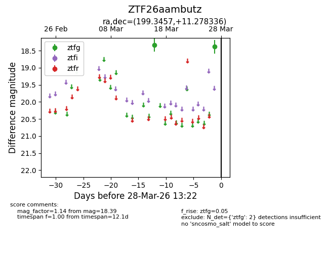
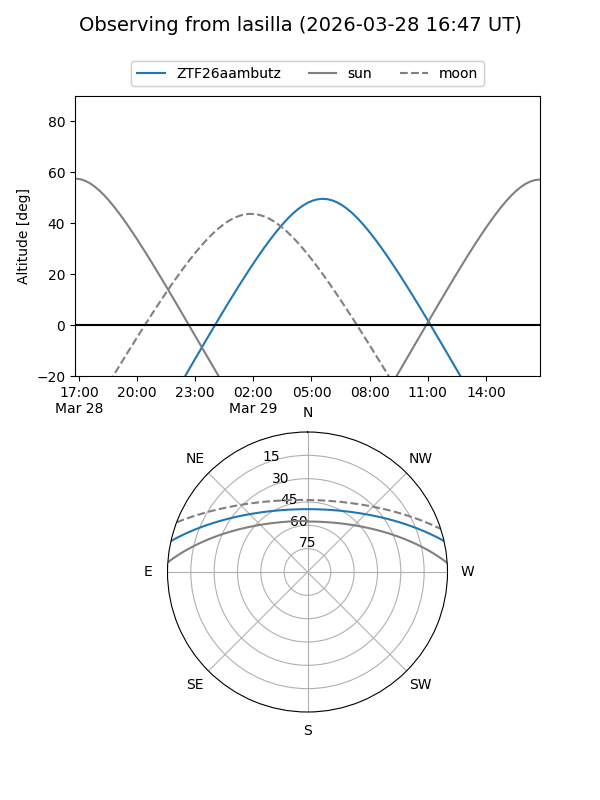
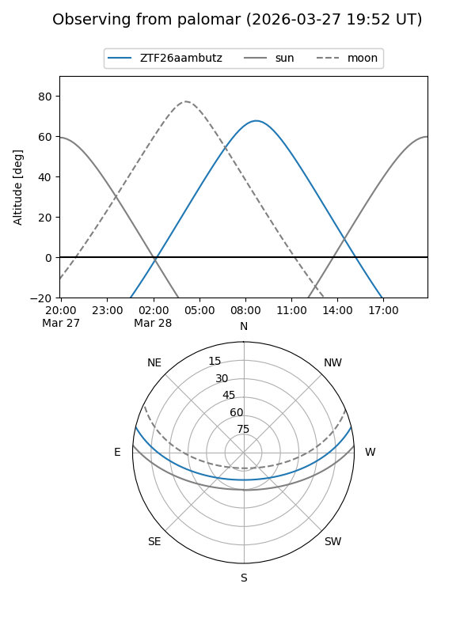

ZTF26aambutz
Target ZTF26aambutz at 2026-03-28 13:25
Aliases and brokers:
FINK: link
Lasair: link
ALeRCE: link
alt names
ZTF26aambutz (ztf,fink_ztf)
Coordinates:
equatorial (ra, dec) = 199.3457,+11.27834
equatorial (HMS+DMS) = 13:17:22.98,+11:16:42.01
galactic (l, b) = (325.2217,+73.01742)
Flags:
Photometry:
last ztfg=18.39
2 ztfg detections
Lightcurve

Visibility


Additional plots